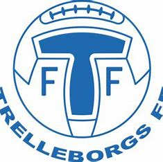
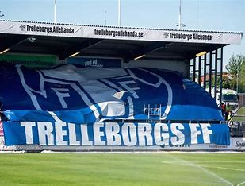

Trelleborgs ff är klubben jag började spela fotboll i samt klubben som jag har spelat för tills jag blev 18 år och fick min skada. Trelleborgs FF är en väldigt stor klubb som satsar mycket på unga spelare och jag fick en väldigt stor lärande i Trelleborg. Där var det seriöst och man tränade på ett proffesionellt sätt så man kunde utvecklas så mycket som möjligt.